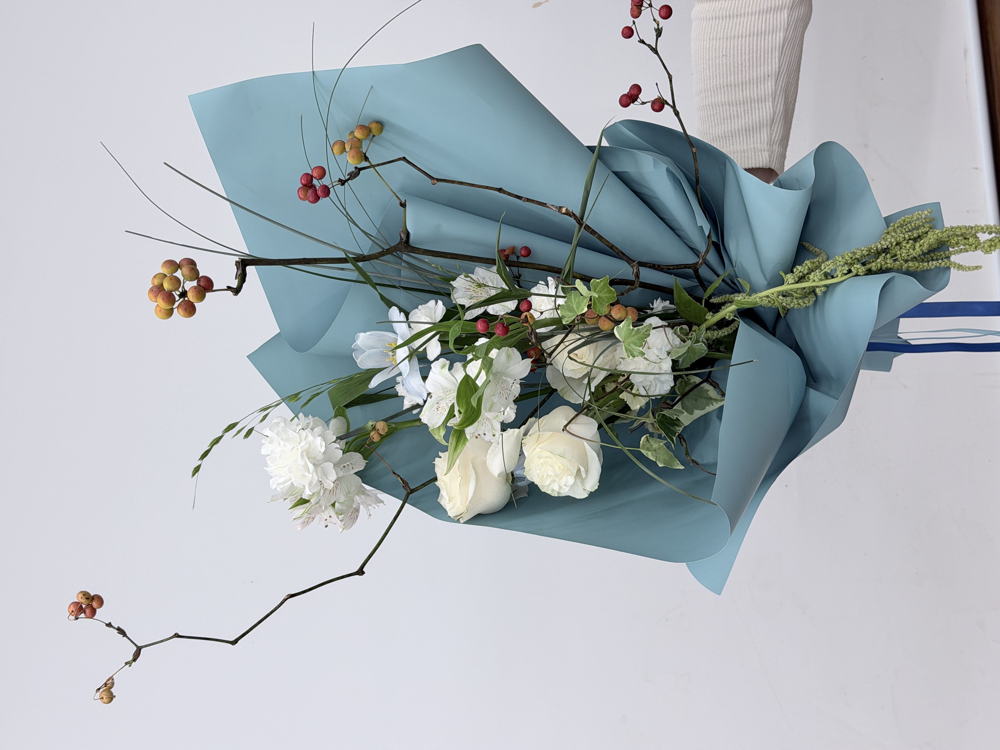
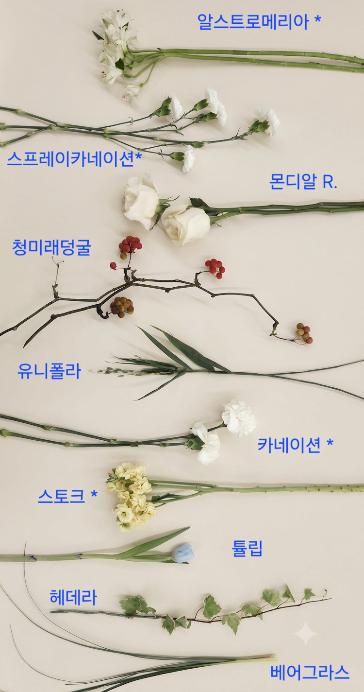
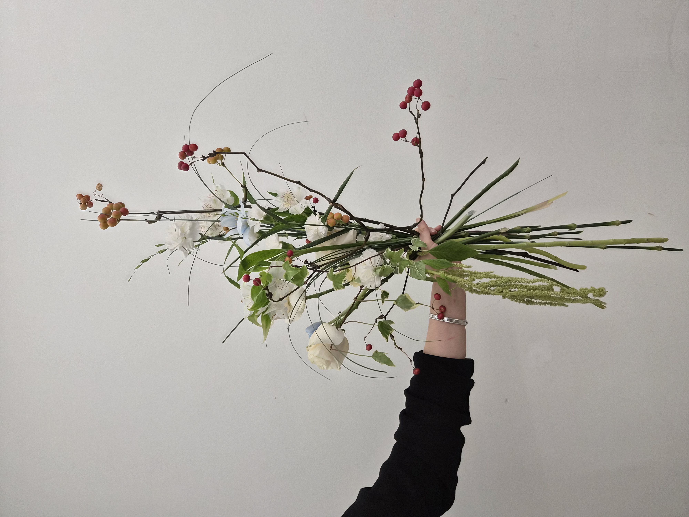
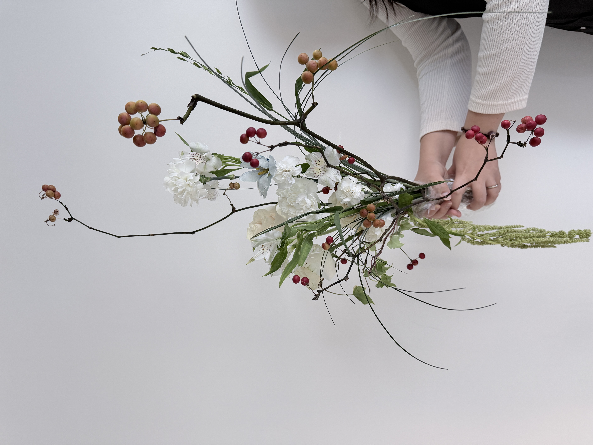
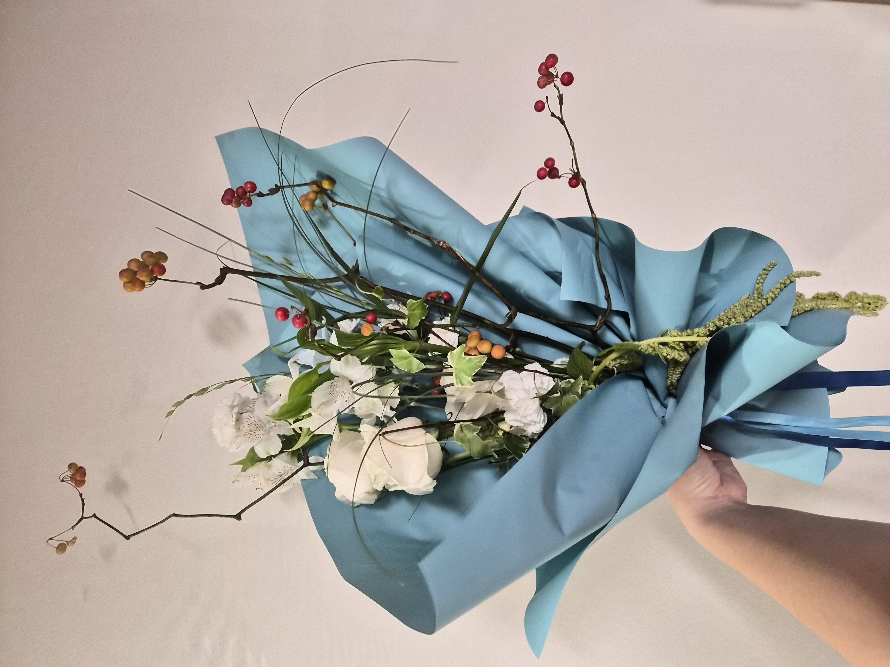
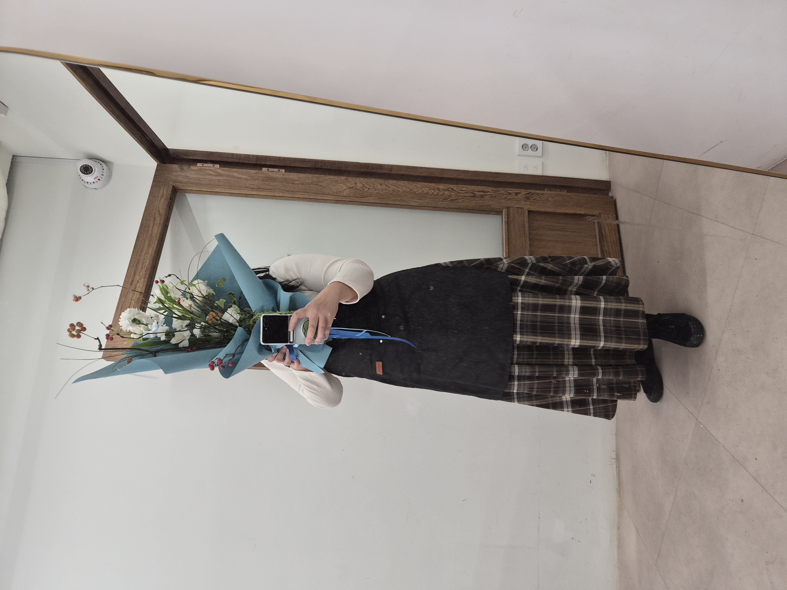

CLASS WORK · HAND-TIED
2026.10.27CONTEMPORARY
HAND-TIED BOUQUET
枝の線と余白を生かしたコンテンポラリー
10 / CLASS WORK
CONCEPT
LINES IN MOTION,
SPACE IN BETWEEN.
길게 뻗는 가지의 선과 꽃이 모이는 중심부의 밀도 차이를 이용해, 비대칭 구도와 여백을 탐구한 컨템포러리 핸드타이드 작업입니다. 화이트 꽃을 중심으로 열매의 붉은빛을 작은 포인트로 더해 가벼운 긴장감을 만들고자 했습니다.
청미래덩굴의 꺾이는 가지와 베어그라스의 유연한 곡선을 서로 다른 방향으로 펼치고, 중심부에는 장미와 카네이션, 알스트로메리아 등을 배치했습니다. 부케를 쥔 상태에서 선의 길이, 꽃군의 높낮이, 바깥쪽으로 열리는 공간을 확인했습니다.
枝ものの直線的な動きとベアグラスのしなやかな曲線を組み合わせ、非対称のバランスと余白を探ったコンテンポラリー・ハンドタイドです。白い花の集まりに赤みのある実を添え、中心の密度と外側に伸びる線の対比を意識しました。
COLOR PALETTE
色の構成
Soft ivory,
berry red,
cool blue.
화이트와 아이보리 계열의 꽃을 중심에 모아 밝은 면을 만들고, 청미래덩굴 열매의 레드·오렌지 톤으로 작은 색의 리듬을 더했습니다. 베어그라스와 잎의 그린이 선을 연결하고, 포장에는 청록빛이 감도는 블루를 사용해 꽃의 밝은 톤과 대비시켰습니다.
白とアイボリーの花を中心に、サルトリイバラの実の赤・オレンジを小さなアクセントとして重ねました。葉と細いグラスの緑でラインをつなぎ、ラッピングにはクールなブルーを合わせています。
SOFT WHITE
#F2F2EDWARM IVORY
#E4DED1BERRY RED
#A84E60LEAF GREEN
#748563DUSTY BLUE
#79AFC0MATERIALS
使用花材
화이트 장미·카네이션·알스트로메리아와 작은 꽃을 중심부에 모으고, 청미래덩굴의 열매와 굴곡진 가지로 시선이 뻗어 나가는 흐름을 만들었습니다. 유니폴라와 베어그라스는 가늘고 유연한 선을, 헤데라는 잎의 형태 변화를 더하는 역할로 사용했습니다.
白いバラ、カーネーション、アルストロメリアなどを中心にまとめ、サルトリイバラの実と枝で外へ伸びる動きを加えました。細いグラス類とアイビーの葉で、曲線と質感の変化をつけています。
알스트로메리아
アルストロメリア
스프레이카네이션
スプレーカーネーション
몬디알 장미
バラ（モンディアル）
카네이션
カーネーション
스토크
ストック
튤립
チューリップ
청미래덩굴
サルトリイバラ
유니폴라
ユニオラ
헤데라
ヘデラ（アイビー）
베어그라스
ベアグラス
Ivory · White · Berry
Lines · Green · Blue
白い花と赤い実、
細いグリーンの線。

수업에 사용한 꽃과 선 소재를 따로 정리한 기록입니다. 화이트 꽃의 크기 차이와 청미래덩굴의 열매·가지, 베어그라스의 가는 선을 비교할 수 있습니다.
使用した花材を並べた記録です。白い花の大きさの違いや、枝ものの実と曲線を確認できます。
COMPOSITION
構成とバランス
FORM,
LINE,
BALANCE.
중심부에는 화이트 꽃의 크고 작은 면을 모으고, 청미래덩굴을 위쪽과 좌우로 길게 뻗게 해 정적인 원형 꽃다발과 다른 실루엣을 시도했습니다.
열매가 달린 가지는 선의 끝에서 시선을 붙잡는 점 요소로 활용하고, 베어그라스는 둥글게 휘어지는 곡선으로 직선적인 가지 사이에 리듬을 만들었습니다.
포장 전에는 바인딩포인트를 중심으로 줄기 방향과 길이를 확인하고, 꽃군 주변의 여백과 뻗는 선이 함께 보이도록 각도와 간격을 조정했습니다.
中心に白い花の面をつくり、サルトリイバラの枝を上下左右へ長く伸ばして非対称のシルエットを構成しました。実は視線を引く点として、ベアグラスは柔らかな曲線として用い、花のかたまりの周囲に余白を残すことを意識しました。

BEFORE WRAPPING
OPEN SPACE,
LONG LINES
& LIGHT MASS.
포장 전 사진에서는 가지의 길이와 방향, 중심의 화이트 꽃이 만드는 밀도 차이가 가장 직접적으로 드러납니다. 곧게 올라가는 선과 양쪽으로 확장되는 곡선을 함께 사용해, 비어 있는 공간까지 형태의 일부가 되도록 구성했습니다.
ラッピング前は枝の長さや向き、中央の白い花の密度が分かりやすく見えます。直線と左右へ伸びる曲線を組み合わせ、余白も形の一部になるよう意識しました。

가까이서 보면 화이트 꽃이 모인 중심부와 청미래덩굴 열매의 높낮이가 구분됩니다. 여백을 가로지르는 베어그라스의 곡선은 정적인 꽃군에 가벼운 움직임을 더합니다.
白い花の中心部と実の高低差が分かります。余白を横切る細いグラスの曲線が、静かな花の集まりに動きを与えています。
FINAL VIEW
完成したかたち

블루 계열 포장지는 밝은 화이트 꽃과 붉은 열매의 대비를 드러내는 배경이 되었습니다. 위쪽으로 뻗는 가지와 좌우로 펼쳐지는 선을 가리지 않으면서, 중심부를 하나의 선물용 부케로 묶어 주도록 구성했습니다.
ブルー系のラッピングは白い花と赤い実の対比を際立たせています。上下左右へ伸びる枝の動きを隠しすぎないようにしながら、中心部をひとつのブーケとしてまとめました。

SCALE & SILHOUETTE
TALL REACH,
WIDE SPACE
& BALANCE.
실제로 들었을 때 부케의 높이와 좌우로 뻗는 가지의 폭이 더 분명해집니다. 포장지의 볼륨과 선 소재가 서로 겹치는 부분도 확인할 수 있어, 컨템포러리 부케를 인체 스케일에서 점검한 기록으로 남겼습니다.
実際に持つと、ブーケの高さと左右へ伸びる枝の幅がよく分かります。ラッピングとラインが重なる部分も含め、人のスケールで全体のバランスを確認した記録です。
REFLECTION
制作を振り返って
LINE,
SPACE,
DECISION.
이번 작업에서는 꽃을 풍성하게 채우는 것보다 가지 한 줄기의 방향과 길이가 전체 인상에 미치는 영향을 더 분명하게 확인할 수 있었습니다. 화이트 꽃의 매스와 붉은 열매, 길게 뻗는 선 사이의 대비가 컨템포러리 스타일의 특징을 만들어 주었습니다.
반면 선 소재가 길고 방향이 다양한 만큼, 바인딩포인트를 유지하면서 원하는 방향을 끝까지 통제하는 일은 쉽지 않았습니다. 포장 후에는 종이의 면적이 커지며 일부 가는 선이 배경에 겹쳐 보이는 점도 확인했습니다. 다음 작업에서는 선의 우선순위를 더 명확하게 정하고 포장과의 간격까지 고려하려 합니다.
一本の枝の向きや長さが全体の印象を大きく変えることを実感した制作でした。白い花の量感と赤い実、長く伸びる線の対比を学ぶ一方、束ねる位置を保ちながら方向を整える難しさや、ラッピング後に一部の線が紙と重なる点も確認しました。
중심부의 안정감을 유지하면서 선의 우선순위와 여백을 더 명확하게 설계하고, 포장 후에도 실루엣이 살아 있도록 마감하기.